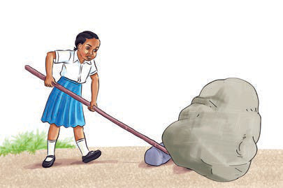
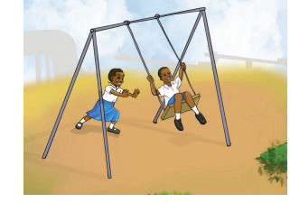
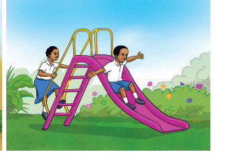

Activity 1
Study Figure 2, then write what you have studied.

(a)
(b)

(c)
(d)
Figure 2: Applications of science in different activities
Figure 2 shows a pupil pushing a heavy stone using an iron rod. The figure also shows a pupil using a mobile phone to simplify communication. We can also apply science when we play; for example, sliding and swinging. Therefore, scientific knowledge is used in making various tools used in our life.